Центральный парк в Нью-Йорке — это одна из визитных карточек «Большого Яблока» и крупнейшее городское лесонасаждение не только в Америке, но и во всем мире. В каждом голливудском фильме, действия которого происходят в Манхэттене, есть целые эпизоды, снятые здесь. Расположена парковая зона между 59-й и 110-й улицами, в самом сердце деловых кварталов, застроенных небоскрёбами, банками и правительственными зданиями. По всей площади встречаются рукотворные природные уголки, которые и создают этот величественный и прославившийся на весь мир образ «бьющегося сердца Манхэттена».
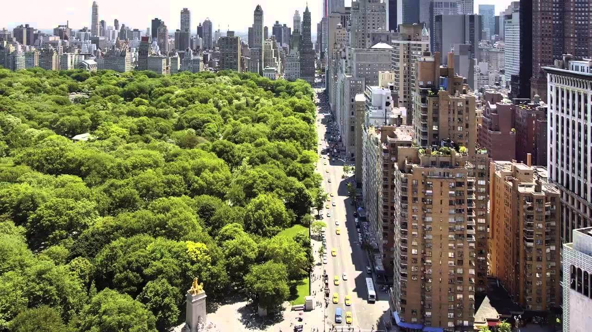
Площадь центрального парка Нью-Йорка — 341 гектар. По самым скромным подсчётам туроператоров, ежегодно сюда приезжают 25 миллионов человек, и это лишь иностранцы, что делает достопримечательность одним из самых посещаемых мест земного шара. Туристов и жителей города притягивает не только буйная растительность, окружённая каменными джунглями, но и богатейшая культурная жизнь с ежегодными фестивалями, концертами и спортивными соревнованиями.
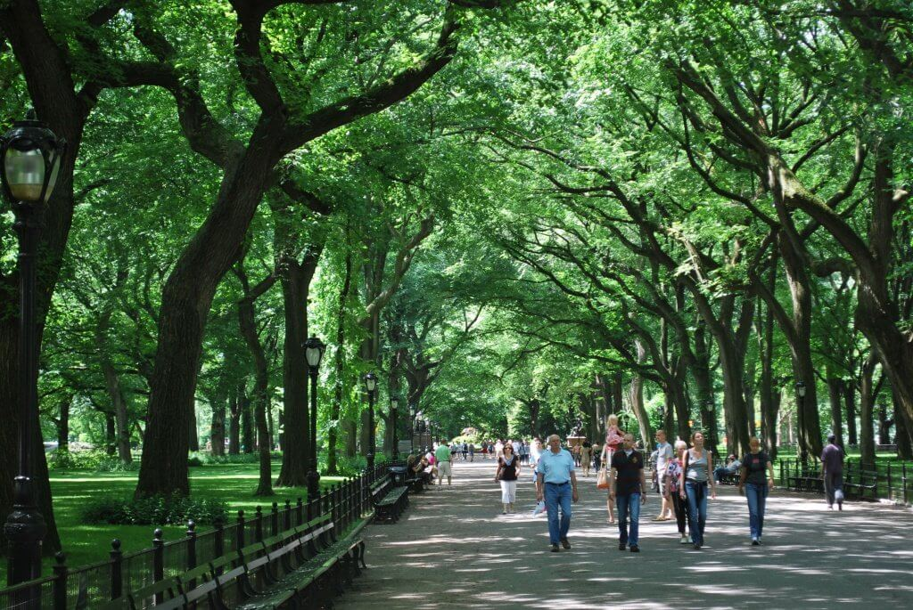
Центральный парк для многих стал американской мечтой. Более 250 фильмов снимали именно в локациях этого парка. Одной из них стала центральная аллея (Central Mall, от 66-й до 72-й улицы). По обеим сторонам высочатся старые деревья, а под ними множество лавочек. Сама аллея - как живая артерия, из-за бесконечного потока людей, которые неспешно прогуливаются вдоль дорожки.
Аллея приведет вас к самой оживленной площади на территории Центрального парка - Терраса Бефезда (Bethesda Terrace) с одноименным фонтаном (72-я улица).
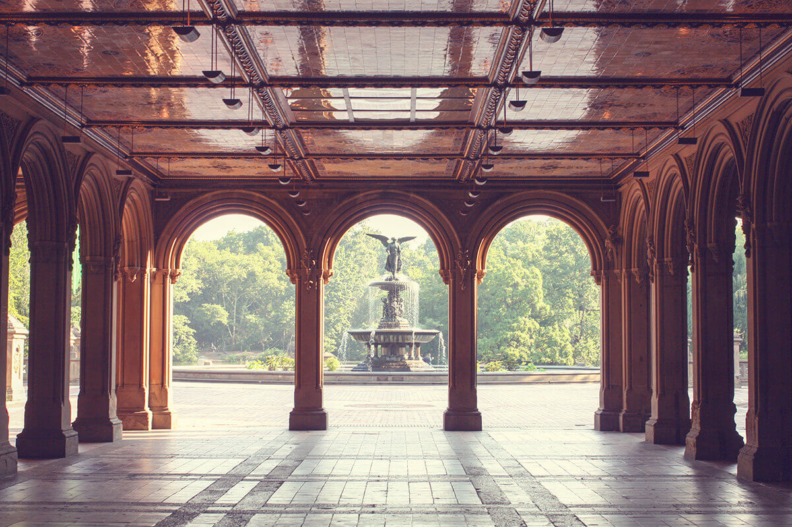
Терраса Бефезда — один из ключевых объектов с двухуровневой смотровой площадкой, фонтаном и несколькими зонами отдыха. Её часто называют самым кинематографичным местом Нью-Йорка — ежегодно тут снимается несколько десятков фильмов и сериалов от ведущих мировых студий. На центральных секторах террасы никогда не бывает безлюдно, круглый год на них организуют фестивали под открытым небом и другие яркие события.
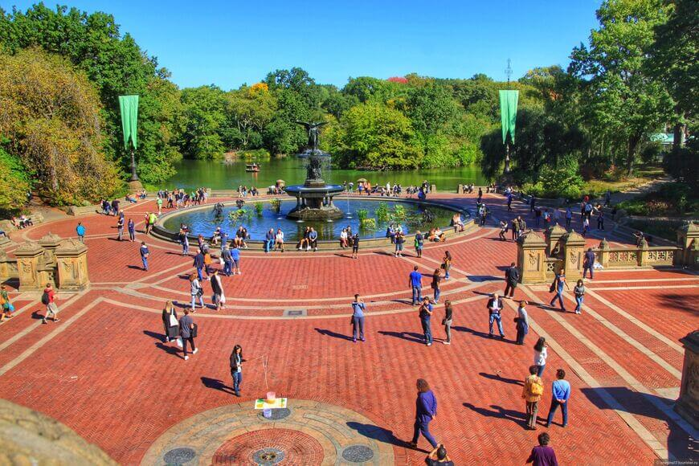
Большая Лужайка и Овечий Луг — два огромных газона, отведённые для пикников и семейного отдыха. Примечательна их история — до 1934-го года они были официальным пастбищем при овцеводстве. Дом фермера стоял неподалёку, и после смерти последнего из владельцев, его выкупили под ресторан, который работает и сегодня с широко известным среди американцев названием: «Зелёная Таверна».
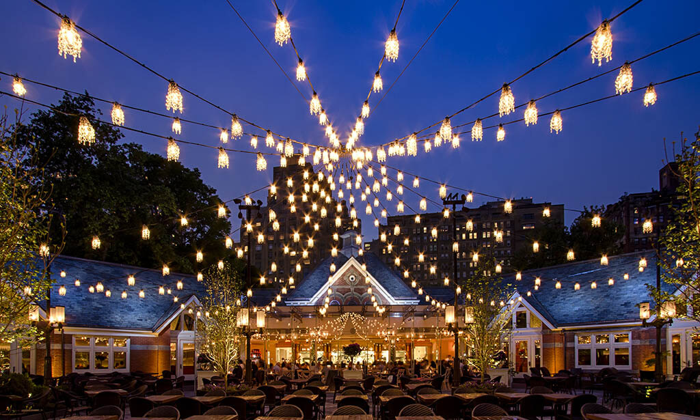
В теплое время года это популярное место, чтобы устроить пикник, поваляться на траве, поиграть в бейсбол, баскетбол, тем более для этого оборудованы специальные площадки. Нередко даже на Большой лужайке проводятся концерты.
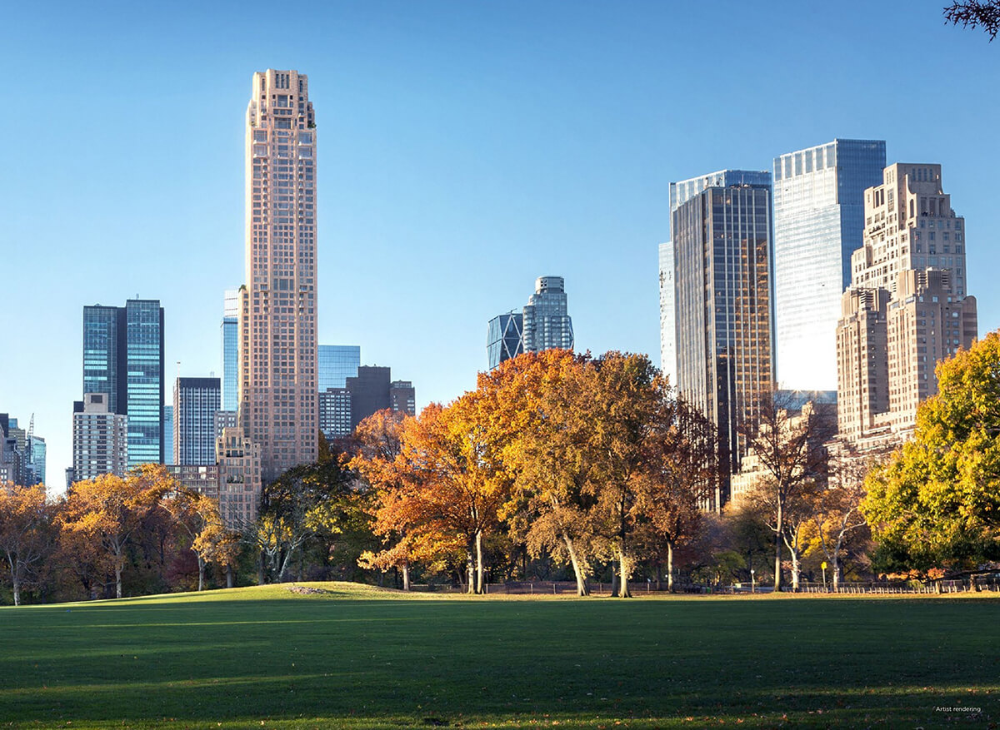
Также недалеко размещается Замок Бельведер (Belvedere Castle, 79-я улица) - сооружение 19 века, расположено на каменном возвышении Vista Rock.
Замок Бельведер — архитектурный каприз, построенный в 1869-м году. «Капризный» факт в нём ровно один — сказочные башенки, возведённые на сланцевой скале, почти 100 лет не несли никакой функции, кроме декора. Сейчас внутри базируется пункт первой помощи для пострадавших посетителей и небольшой сувенирный магазинчик. С замка открывается вид на пруд с водоплавающими черепахами.
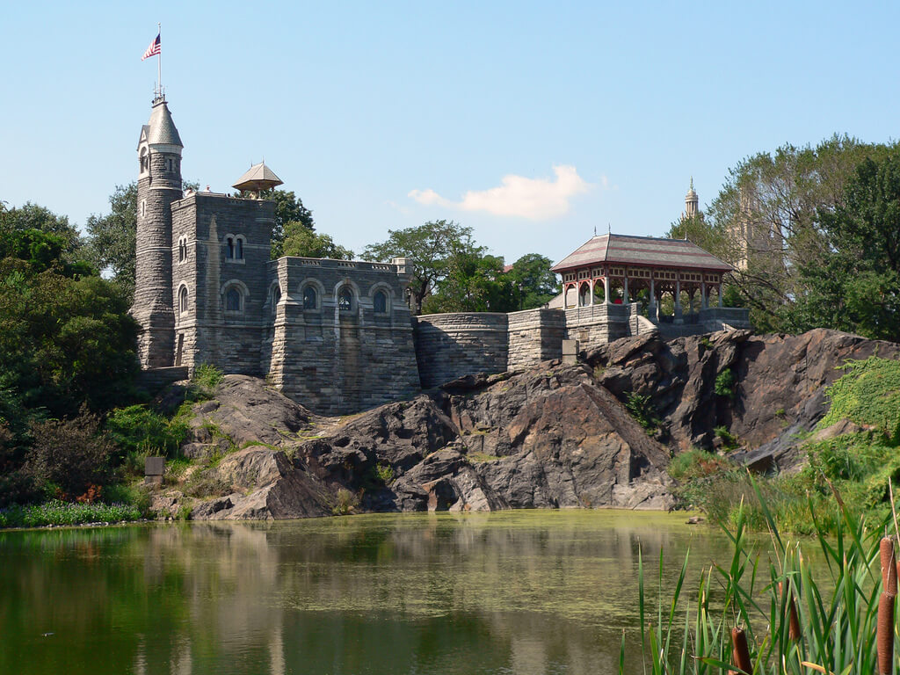
Cовершенно прелестное местечко - Шекспировский Сад. В Центральном парке есть несколько мест, связанных с Шекспиром. На центральной аллее, напротив памятника Колумбу, стоит статуя Шекспира. Писатель посадил здесь Тутовое дерево еще в 1602 году. В саду вы увидите разнообразные виды растений, деревьев, а также прекрасные цветы, которые упоминаются в произведениях Уильяма Шекспира.
Рядом с летним театром, зрительные ряды которого возвышаются неподалеку от замка, стоят скульптуры героев шекспировских пьес. В этом театре два месяца в году бесплатно идут каждое лето пьесы Шекспира.
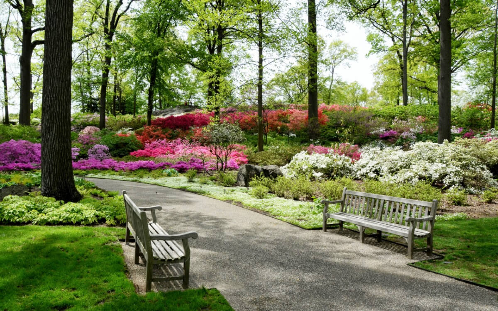
Следующая живописная остановка - водохранилище Жаклин Кеннеди Онассис (Jacqueline Kennedy Onassis Reservoir, от 86-й до 96-й улицы). Самый большой водоем на территории Центрального парка, вокруг которого так любят устраивать пробежки местные жители.
Озеро окружает интересный ландшафт с зарослями вишни Йосино и японской вишни сорта Канзан, рододендрона. Фауна озера включает такие виды как кряква, канадская казарка, лысуха, гагары, поганковые, цапли.
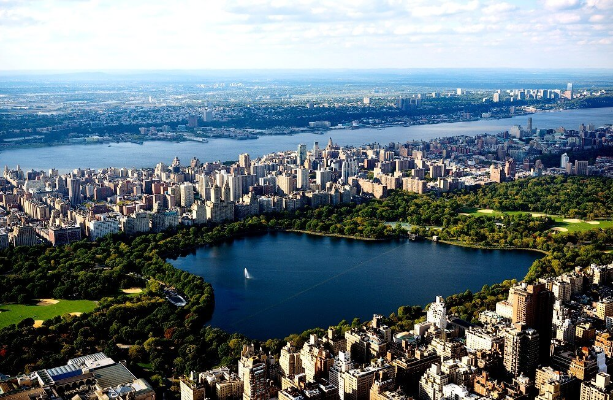
Памятник Балто — самый известный сибирский хаски на свете удостоился персонального бронзового монумента. Многие знают историю про эпидемию дифтерии на Аляске в 1920-х годах, и, благодаря смелому псу, всегда мчавшемуся впереди упряжки, в города доставлялись лекарства для больных детей. Собака стала национальным героем Америки, а его имя — символом ума, преданности и выносливости — именно эти три слова высечены на постаменте.
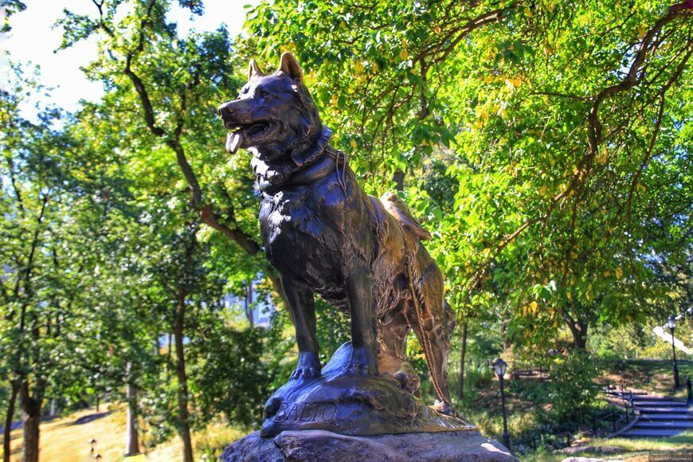
Уоллман-Ринк (Wollman Rink, 6-е авеню, 59-я улица) - один из самых известных катков в мире. Его площадь составляет 2600 квадратных метров. Также является популярным местом для съемок сцен фильма, одним из которых стала комедия «Один дома 2». Летом (с июня по сентябрь) вместо катка появляется парк развлечений - работают фудкорты, аттракционы и детские игровые площадки. С 1986-го года каток принадлежит группе компаний Дональда Трампа, будущий 45-й президент США лично запретил проводить на летней лужайке музыкальные фестивали и ночные дискотеки, полностью отдав площадку под детские и семейные развлечения.
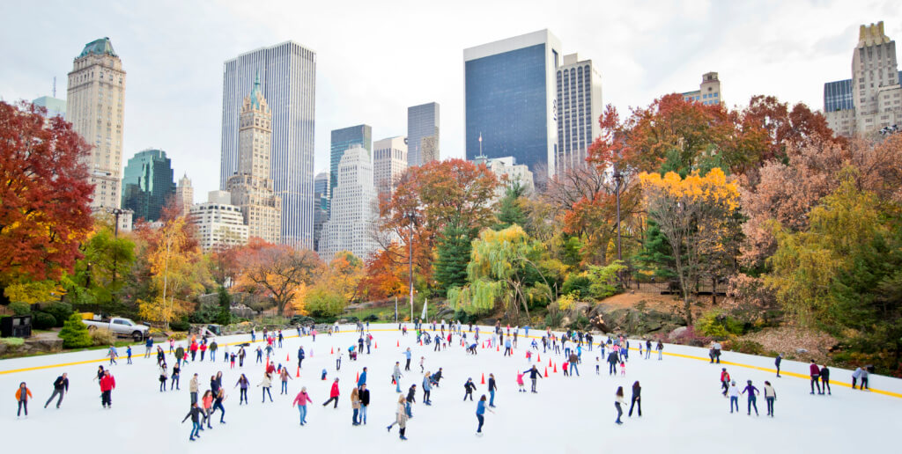